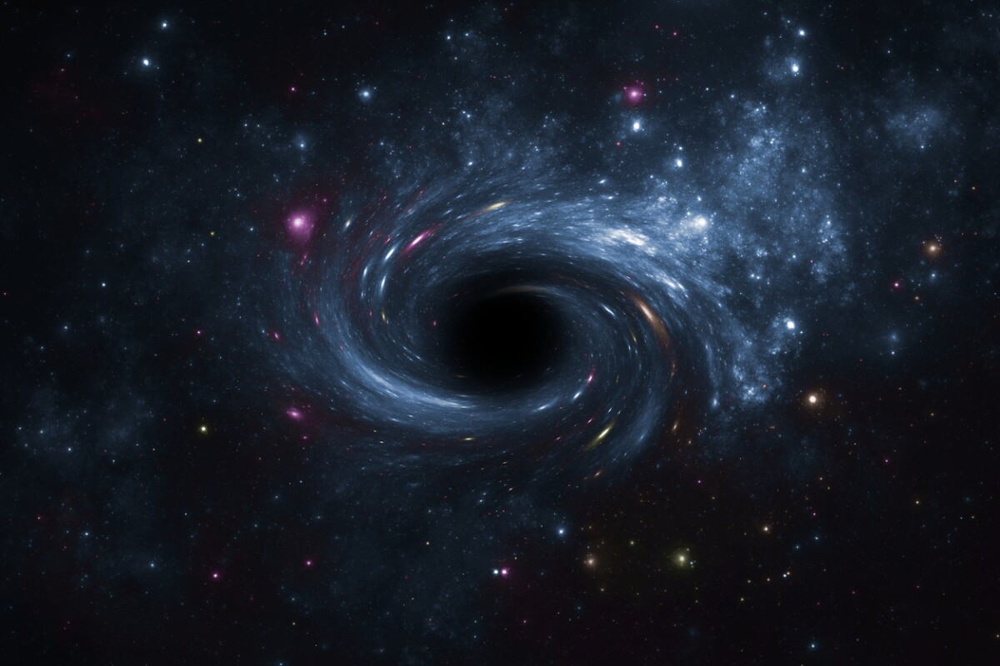

La materia oscura es una de las grandes incógnitas del cosmos. Aunque no podemos verla directamente, su presencia se infiere a partir de los efectos gravitacionales que ejerce sobre las galaxias y el universo en su conjunto.
¿Qué es la materia oscura?
La materia oscura no emite, absorbe ni refleja luz, lo que la hace invisible para los telescopios convencionales. Sin embargo, los astrónomos han detectado su existencia debido a las alteraciones gravitacionales en las galaxias.
Teorías sobre la materia oscura
Los científicos han propuesto varias teorías para explicar la materia oscura. Algunas sugieren que está compuesta por partículas aún desconocidas, como los WIMPs (Partículas Masivas de Interacción Débil), mientras que otras consideran la posibilidad de modificar las leyes de la gravedad.
El futuro de su investigación
Experimentos como el Gran Colisionador de Hadrones y telescopios como el James Webb podrían ayudar a descifrar el misterio de la materia oscura en los próximos años.